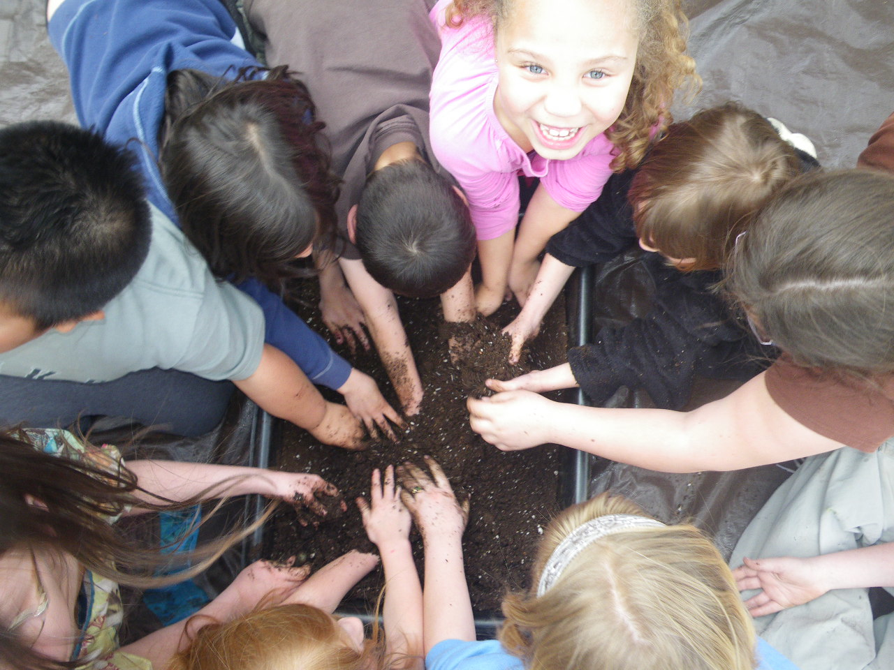

Seeds of Solidarity
Grow Food Everywhere
Education Programs

2020 Workshop and Event calendar
| Date | Event Details | Time |
|---|---|---|
| March 8th | Making Love While Farming book reading, inspiring conversation and potluck at Fabric of Life in Colrain, MA. | 2-5 PM |
| April 18th | Farmer, Doctor, CBD | N/A |
| April 19th | free mini-workshop and book reading at the Arms Library, Shelburne Falls MA on Growing Food and Climate Resilience | 3-5 PM |
| April 30th | Book reading and conversation at New Salem Library | N/A |
| May 9th | Solidarity Saturday Farm Tour | 10-11:30 AM |
| May 9th | No-Till For Life Workshop | 1-4 PM |
| June 5th-7th | Craft Your Own Life Mini internship for young people ages 20 to 24 | N/A |
| July 3rd-5th | Grow Food Everywhere for Great Health and Community | N/A |
| August 29th | Farmer, Maker, CBD | N/A |
| October 3rd-4th | 22nd Annual North Quabbin Garlic and Arts Festival | 10-5 PM |
| October 17th | Solidarity Saturday Farm Tour | 10-11:30 AM |
We are pleased to announce a new program for 2020 in partnership with Quabbin Harvest Community Market called Recipe for Wellness, for low-income Orange Families and those impacted by incarceration or substance use disorder. Click below to see and print, and complete an application. Return it as indicated within by March 30th. Contact solidarity@seedsofsolidarity.org with any questions.
Application for Recipe for Wellness
As a small and strongly community rooted organization in a region, we focus on initiatives that foster health, justice and food and energy resiliency in our own region, which has both tremendous economic and health needs and great potential to survive and thrive.
Learn more about our education programs in, with, and for the community:
SOL(Seeds of Leadership) Garden for North Quabbin Teens
The Annual North Quabbin Food Forum held each February, that unites residents of our nine-town region to build community and food resiliency.
Our Grow Food Everywhere for Health and Justice program that provides gardens to families and childcare centers in need of, and unable to afford fresh food, and wellness gardens at central community locations
School Garden workshops and resources
The North Quabbin Garlic and Arts Festival that we organize with our neighbors, a scent-sational, environmentally innovative event that ignites the cultural, local, economic, and agricultural vitality of our region.